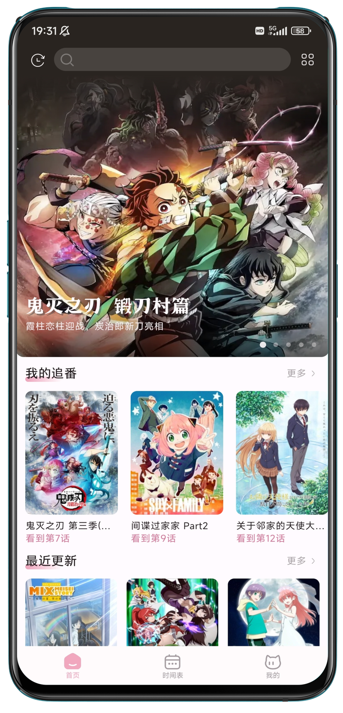
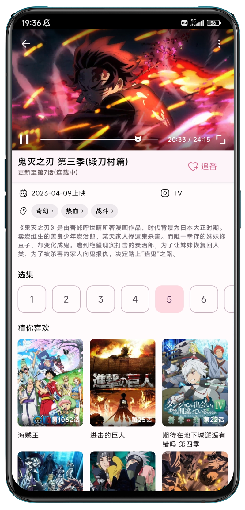

10MB 追番客户端值不值得用：NekoAnime 在开源番剧工具里的位置
把 NekoAnime 放进开源番剧客户端的坐标系里——它用体积、广告和平台限制换来了纯粹的追番体验，适合轻量用户，也能在老机型上跑得稳。
同类软件格局：开源追番工具本来就是个夹缝
追番这个需求很尴尬。正规视频应用有版权、有弹幕、有社区，但番剧更新慢、广告多、占空间大；网页上的资源站更新快、片源全，但弹窗误触、手机浏览器体验差。开源追番客户端就是在这两者的夹缝里长出来的——它的生存逻辑从来不是跟大厂拼功能，而是把「资源站的片库 + 正规应用的体验」这两件事捏到一起。
这个类目里选手不少。早几年的 Imomoe 攒过一波用户，后来的 Bangumi 生态也冒出过几个三方客户端，大厂自己也在做番剧专区但那不是同一个赛道。开源追番工具的共同宿命是数据源绑定——一旦源站换域名或改页面，应用就得跟着改，迭代节奏永远不在自己手里。NekoAnime官网 也是这个宿命里的一员，但它选了一条跟别人不太一样的路径。
它的差异化：把轻量这件事做到底
体积克制到不像一个视频应用
10.6MB 的安装包是什么概念？你手机里随便一个输入法、一个天气应用都比它大。大厂视频应用动辄上百 MB，加上缓存轻松破 GB。NekoAnime 10.6MB 装完跑起来，内存占用也非常克制——我在一台用了四年的骁龙 660 老机型上装过，跟同期试的另外两款开源客户端相比，切换和加载速度确实更利落。
这个 10MB 不是砍功能砍出来的。首页轮播、新番动态、分类筛选、搜索、详情页、播放器手势、离线缓存——该有的都有。它用的是 Kotlin + Jetpack Compose 的现代技术栈，架构参考了谷歌官方的 nowinandroid 示例，从一开始就没有历史包袱。

真的没有广告
这一点在同类里并不稀奇，但 NekoAnime 做得更彻底——不是「开发者愿意就没有」，而是项目设计里从一开始就没有广告位。打开就是番剧列表，搜出来就播，播放器界面干净，锁屏界面也不会冒出个开屏广告等你等三秒。对比一下同类工具里偶尔会弹的开发者感谢弹窗、或者某些渠道打包里夹带的推广位，这个区别对于被网页资源站弹窗折磨过的用户来说是硬刚需。
离线缓存补上了最关键的一块
开源追番工具长期以来的短板就是缓存。要么根本没有，要么缓存逻辑差到找不着文件。NekoAnime 在 v0.5 系列把这个功能补上了，而且做得不凑合——缓存的集数不受源站波动影响，源站断了照样能看。项目历史里写得清楚，这个功能是用户呼声最高的，v0.5 才加上，说明开发者是真听反馈的。
它的取舍：轻量不是没有代价
数据源绑定是原罪
NekoAnime 的片库完全来自樱花动漫系资源站。2024 年 9 月 v0.4.0 那次伤筋动骨的换源，直接导致用户数据全部重来——这不是开发者能控制的。源站换域名、改页面结构、加密视频地址，每一次都逼开发者紧急发版。v0.5.2 就是专门用来解密的，历史上类似的修复版本已经有过好几次。
这种不确定性意味着：它不是一个可以「装了就不用管」的应用。全站加载失败了，先别急着卸载，去NekoAnime文档和仓库看看有没有新版本，大概率是源站侧又出了变化。清缓存、等一等，往往几小时到几天就能恢复。
只有安卓，而且要求 Android 10+
安装包从官方下载拿，目前只有安卓版，没有 iPhone 版，没有电脑版。平台支持写得明明白白，这不是技术局限，而是项目定位——轻量、专注、不扩散。Android 10 的门槛不算高，但也意味着特别老的机器（比如 Android 9 及以下）装不了。对大部分用户来说这不是问题，但如果你手上真有个老古董，得提前注意。
没有弹幕，没有多端同步
弹幕是很多追番用户的核心需求。NekoAnime 从头到尾就没打算做弹幕——不是做不了，而是做了弹幕就得做社区，做社区就不叫轻量了。同样地，追番历史和收藏只存在本机，换机不迁移，卸载清零。这对于有换机习惯的用户来说是个麻烦。

选购结论：你是什么人就选什么
适合 NekoAnime 的用户：不想在追番这件事上折腾手机的人——讨厌广告、不想注册账号、手机存储紧张、只用安卓。被网页资源站弹窗伤过的用户也值得试试，把片库装进一个干净的客户端里体验会好很多。开源偏好者也会喜欢它，仓库历史透明，Issues 区讨论活跃，代码公开可查。
不太适合的：需要弹幕氛围的、iPhone 用户、有重度多端同步需求的。这些需求可以去同类开源项目里找，那个赛道里有做弹幕做得不错的，但代价通常是体积更大、广告更多、或者迭代速度更慢。
最后说一句实话：在开源追番工具这个赛道里，没有完美解。NekoAnime 选了「轻量」作为核心竞争力，就自然放弃了弹幕、多端、社区这些东西。但如果你刚好只想要一个打开就能看、没有广告、不占空间的追番客户端，那它就是这个类目里最合适的选项之一。
关于这个项目的更多资料在三个仓库都同步维护着，GitHub 是主仓库，国内访问慢的话可以换Gitee 或GitCode，构建文档、版本日志和问题反馈记录全都能找到。开源项目的好处就是所有东西都摆在明面上。